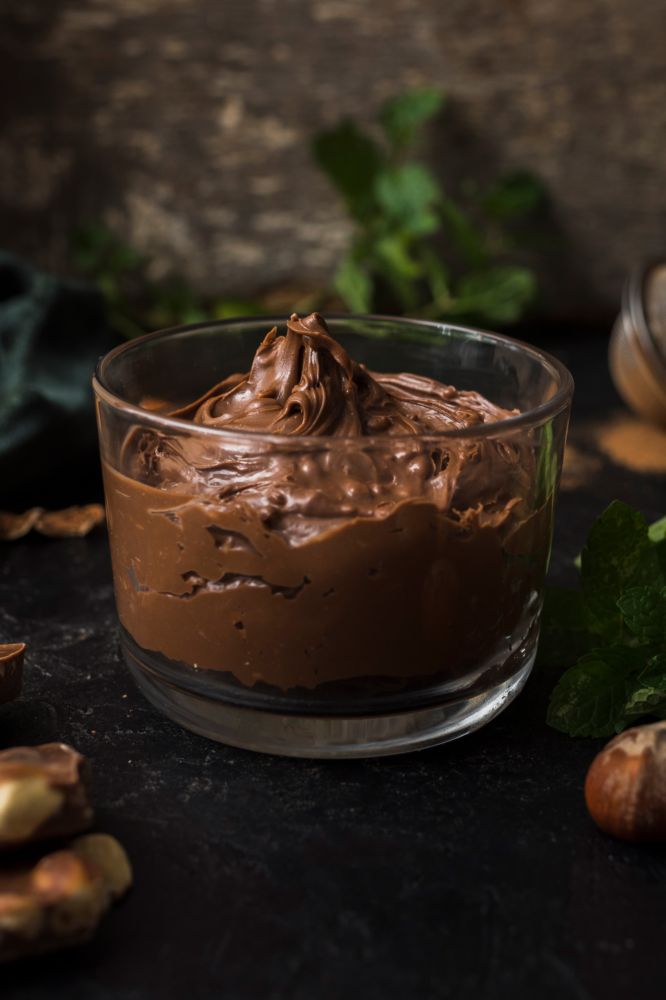

Postre: Mousse de chocolate
Un final suave, intenso y chocolatoso. La mousse de chocolate es un clásico que nunca decepciona. Aireada, dulce y perfecta para cerrar el menú ideal.
Ingredientes
- 200 g de chocolate semiamargo
- 3 huevos (separadas yemas y claras)
- 2 cucharadas de azúcar
- 1 pizca de sal
- Crema batida o frutas para decorar (opcional)
Paso a paso
- Derretí el chocolate a baño maría o en microondas.
- Incorporá las yemas al chocolate tibio y mezclá.
- Batí las claras a nieve con una pizca de sal y azúcar.
- Uní todo con movimientos suaves y envolventes.
- Refrigerá por al menos 3 horas antes de servir.